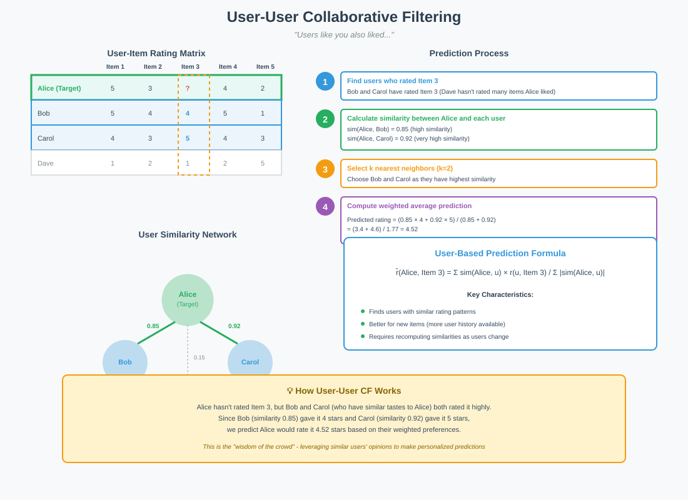
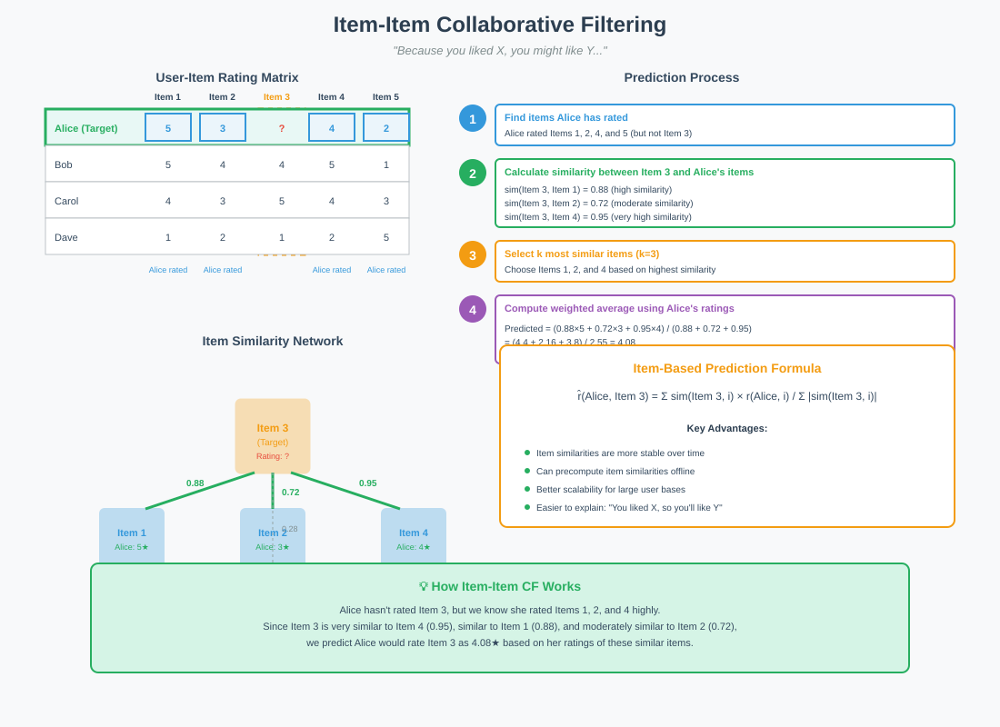
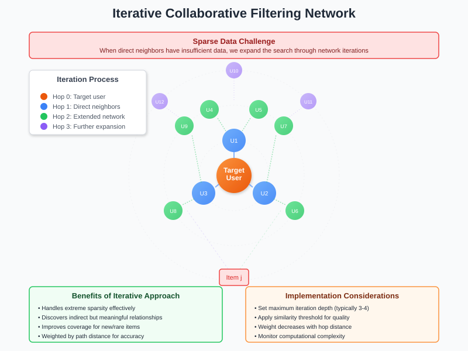

Collaborative Filtering in Recommendation Systems
Quick Navigation
- Introduction
- Types of Collaborative Filtering
- User-User Collaborative Filtering
- Item-Item Collaborative Filtering
- Combined Approaches
- Iterative Collaborative Filtering
- Mathematical Formulations
- Advantages and Applications
- Implementation Considerations
- References & Further Reading
Introduction
Collaborative Filtering is a fundamental technique in recommendation systems that predicts user preferences by collecting preferences from many users. Unlike aggregate clustering, which may not be representative for users near cluster boundaries, collaborative filtering creates personalized clusters for each user or item.

Key Concepts:
- Personalized Clustering: For every user or item Lᵢⱼ, we find similar entities and use their average for matrix estimation
- Similarity-Based Predictions: Leverages the wisdom of the crowd to make personalized recommendations
- Matrix Completion: Fills in missing values in the user-item interaction matrix
Types of Collaborative Filtering
Overview of Approaches
Collaborative filtering can be implemented through two main approaches, each with unique characteristics and use cases:
Main Types:
- User-Based (User-User) Collaborative Filtering: Predicts items a user might like based on ratings from similar users
- Item-Based (Item-Item) Collaborative Filtering: Predicts user preferences by finding similarities between items the user has rated
- Hybrid Approaches: Combines both user-based and item-based methods for improved accuracy
Comparison Table:
| Aspect | User-User CF | Item-Item CF |
|---|---|---|
| Similarity Calculation | Between users | Between items |
| Scalability | Challenging with many users | Better with stable item catalog |
| Real-time Performance | Slower for large user bases | Faster predictions |
| Cold Start Problem | Better for new items | Better for new users |
| Interpretability | "Users like you also liked..." | "Because you liked X, you might like Y..." |
User-User Collaborative Filtering
Algorithm Overview
User-User collaborative filtering identifies users with similar preferences and uses their ratings to predict items the target user might enjoy.

Step-by-Step Process
To find the likelihood of user i on item j:
- Step 1: Identify all users who have rated item j
- Step 2: Calculate similarity scores between user i and all users who rated item j
- Step 3: Select top k nearest neighbors based on similarity scores
- Step 4: Compute weighted average of neighbors' ratings to estimate the value
Mathematical Example
Consider a user-item matrix where we need to estimate Lᵢⱼ:
Given: User i and User N both rated items 1 and M
Cosine Similarity = (1×1) + (4×4) / √[(1² + 4²) × (1² + 4²)] = 1
Since similarity = 1 (perfect similarity), the predicted rating for user i on item j equals user N's rating on item j.
Weighting Strategies:
- Simple Average: Equal weights for all neighbors
- Weighted Average: Weights proportional to similarity scores
- Exponential Weighting: Higher emphasis on most similar users
- Gaussian Weighting: Smooth decay based on similarity distance
Item-Item Collaborative Filtering
Algorithm Overview
Item-Item collaborative filtering finds items similar to those the user has already rated and uses these similarities for prediction.

Step-by-Step Process
To find the likelihood of user i on item j:
- Step 1: Identify all items that user i has rated
- Step 2: Calculate similarity scores between item j and all items rated by user i
- Step 3: Select top k most similar items
- Step 4: Compute weighted average of user i's ratings on similar items
Advantages Over User-User
Key Benefits:
- Stability: Item similarities change less frequently than user preferences
- Precomputation: Item similarities can be calculated offline
- Scalability: Better performance with large user bases
- Interpretability: Clear explanations for recommendations
Combined Approaches
Hybrid User-Item Collaborative Filtering
Combining both user-user and item-item approaches can improve prediction accuracy by leveraging both perspectives.
Mathematical Formulation:
L̂ᵢⱼ = Σ(i'∈Iᵢ, j'∈Iⱼ) L(i'j') / |Iᵢ| × |Iⱼ|
Where:
- Iᵢ = set of users similar to user i
- Iⱼ = set of items similar to item j
- L(i'j') = known ratings in the neighborhood
Implementation Strategies:
- Linear Combination: Weighted sum of user-based and item-based predictions
- Switching Hybrid: Choose method based on confidence or data availability
- Mixed Hybrid: Present recommendations from both methods
- Feature Combination: Use both as features in a meta-learner
Iterative Collaborative Filtering
Addressing Sparse Data Challenges
When the user-item matrix is extremely sparse, iterative collaborative filtering extends the neighborhood search through multiple hops.

Algorithm Process
Iterative Expansion Steps:
- Initial Search: Find directly similar users/items
- First Expansion: Find users similar to the initial similar users
- Continue Iteration: Repeat until sufficient neighbors are found
- Aggregate Predictions: Use extended neighborhood for estimation
Practical Considerations
Stopping Criteria:
- Maximum Iterations: Limit to prevent infinite expansion
- Minimum Similarity Threshold: Ensure quality of distant neighbors
- Sufficient Neighbors: Stop when enough reliable predictors found
- Convergence Check: Monitor if predictions stabilize
Mathematical Formulations
Similarity Metrics
Cosine Similarity:
sim(u, v) = Σᵢ(rᵤᵢ × rᵥᵢ) / √(Σᵢrᵤᵢ² × Σᵢrᵥᵢ²)
Pearson Correlation:
sim(u, v) = Σᵢ(rᵤᵢ - r̄ᵤ)(rᵥᵢ - r̄ᵥ) / √(Σᵢ(rᵤᵢ - r̄ᵤ)² × Σᵢ(rᵥᵢ - r̄ᵥ)²)
Jaccard Similarity:
sim(u, v) = |Iᵤ ∩ Iᵥ| / |Iᵤ ∪ Iᵥ|
Prediction Formulas
User-Based Prediction:
r̂ᵤᵢ = r̄ᵤ + Σᵥ∈N(u) sim(u, v) × (rᵥᵢ - r̄ᵥ) / Σᵥ∈N(u) |sim(u, v)|
Item-Based Prediction:
r̂ᵤᵢ = Σⱼ∈N(i) sim(i, j) × rᵤⱼ / Σⱼ∈N(i) |sim(i, j)|
Advantages and Applications
Key Advantages
Technical Benefits:
- Non-parametric Approach: No assumptions about data distribution
- Incremental Updates: Easy to add new users/items
- Interpretability: Clear reasoning for recommendations
- Domain Independence: Works across different content types
Practical Benefits:
- Scalability: Efficient implementations using approximate nearest neighbors
- Robustness: Handles noise and outliers well
- Flexibility: Adaptable to various similarity metrics
- Proven Effectiveness: Widely deployed in production systems
Real-World Applications
Industry Examples:
- E-commerce: Amazon's "Customers who bought this also bought..."
- Streaming Services: Netflix and Spotify recommendations
- Social Media: Facebook friend suggestions
- News Aggregation: Personalized article recommendations
Implementation Considerations
Performance Optimization
Computational Strategies:
- Locality-Sensitive Hashing (LSH): Approximate nearest neighbor search
- Matrix Factorization: Reduce dimensionality for faster computation
- Caching: Store frequently accessed similarities
- Distributed Computing: Parallelize similarity calculations
Handling Challenges
Common Issues and Solutions:
- Cold Start Problem:
- Use demographic data for new users
- Apply popularity-based recommendations initially
-
Implement hybrid methods with content-based filtering
-
Data Sparsity:
- Apply dimensionality reduction techniques
- Use iterative collaborative filtering
-
Incorporate implicit feedback signals
-
Scalability:
- Implement sampling strategies
- Use clustering to reduce computation
- Deploy distributed architectures
🔗 Google Colab Implementation

Example Implementation Topics:
- Basic user-user collaborative filtering with NumPy
- Item-item collaborative filtering using Surprise library
- Hybrid approaches with TensorFlow Recommenders
- Performance evaluation metrics
References & Further Reading
Academic Papers
- Sarwar et al. (2001) - "Item-based collaborative filtering recommendation algorithms" - ArXiv
- Koren et al. (2009) - "Matrix Factorization Techniques for Recommender Systems" - IEEE Computer
- Su & Khoshgoftaar (2009) - "A Survey of Collaborative Filtering Techniques" - Advances in AI
Implementation Libraries
- Surprise - Python scikit for recommender systems - Documentation
- TensorFlow Recommenders - Deep learning for recommendations - GitHub
- LightFM - Hybrid recommendation algorithms - Documentation
Additional Resources
- Google's Recommendation Systems Course - Coursera
- Microsoft Recommenders - Best practices and examples - GitHub
- RecSys Conference Papers - Latest research in recommendation systems - ACM RecSys